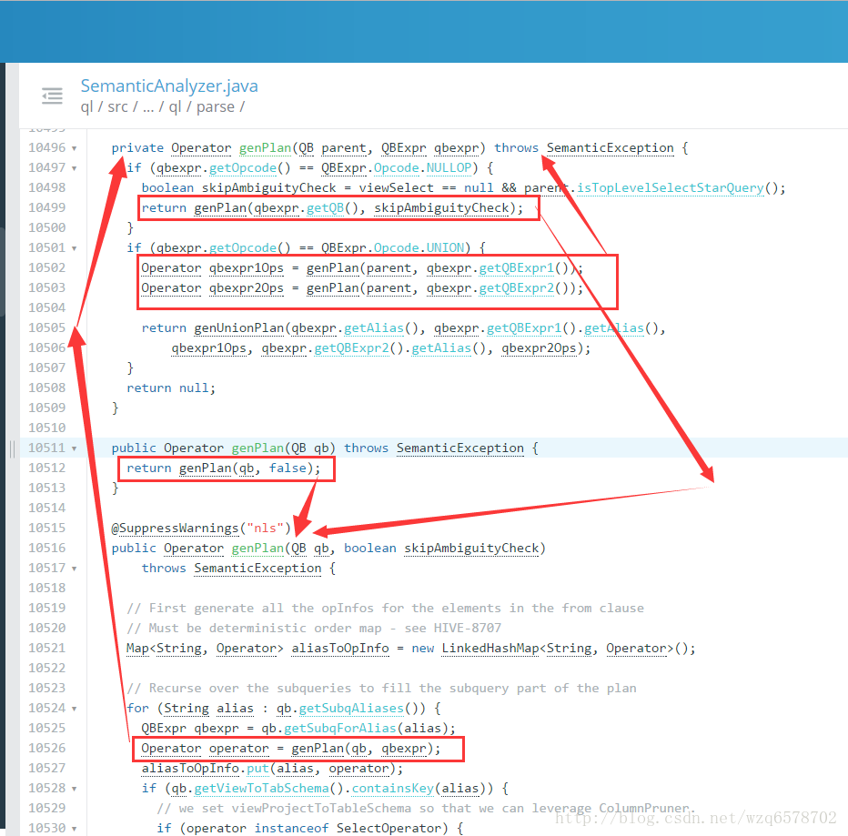

executeDriver方法将一条sql用“；”拆分成多条语句，每条语句执行 ret = cli.processLine(line, true);
1 2 3 4 5 6 7 8 9 10 11
/** * Processes a line of semicolon separated commands * @param line The commands to process * @param allowInterrupting When true the function will handle SIG_INT (Ctrl+C) by interrupting the processing and * returning -1 * @return 0 if ok */ public int processLine(String line, boolean allowInterrupting) { 。。。。。。。。。略 ret = processCmd(command); 。。。。。。。。。略
public void analyzeInternal(ASTNode ast) throws SemanticException { analyzeInternal(ast, new PlannerContext()); }
进入analyzeInternal(ast, new PlannerContext());
1 2 3 4 5 6 7 8 9
void analyzeInternal(ASTNode ast, PlannerContext plannerCtx) throws SemanticException { // 1. Generate Resolved Parse tree from syntax tree LOG.info("Starting Semantic Analysis"); //change the location of position alias process here processPositionAlias(ast); if (!genResolvedParseTree(ast, plannerCtx)) { return; } 。。。。。。。。。。。略。。。。。。
进入genResolvedParseTree(ast, plannerCtx)
1 2 3 4 5 6 7 8 9 10
boolean genResolvedParseTree(ASTNode ast, PlannerContext plannerCtx) throws SemanticException { 。。。。。。。略。。。。。。。。 // 4. continue analyzing from the child ASTNode. Phase1Ctx ctx_1 = initPhase1Ctx(); preProcessForInsert(child, qb); if (!doPhase1(child, qb, ctx_1, plannerCtx)) { // if phase1Result false return return false; } 。。。。。。。。。。。。略。。。。。。
/** * Phase 1: (including, but not limited to): * 1. Gets all the aliases for all the tables / subqueries and makes the * appropriate mapping in aliasToTabs, aliasToSubq 2. Gets the location of the * destination and names the clause "inclause" + i 3. Creates a map from a * string representation of an aggregation tree to the actual aggregation AST * 4. Creates a mapping from the clause name to the select expression AST in * destToSelExpr 5. Creates a mapping from a table alias to the lateral view * AST's in aliasToLateralViews * * @param ast * @param qb * @param ctx_1 * @throws SemanticException */ @SuppressWarnings({"fallthrough", "nls"}) public boolean doPhase1(ASTNode ast, QB qb, Phase1Ctx ctx_1, PlannerContext plannerCtx) throws SemanticException { 。。。。。。。。。。。。。。。。略。。。。。。。。 case HiveParser.TOK_SELECT://select类型的token qb.countSel();//对qb做标记 qbp.setSelExprForClause(ctx_1.dest, ast); 。。。。。。。。。。。。。。。。。略。。。。。。 case HiveParser.TOK_WHERE://where类型token //对where的孩子进行处理，为什么是ast.getChild(0)？这个是和之前的HiveParser.g结构相辅相成的。 qbp.setWhrExprForClause(ctx_1.dest, ast); if (!SubQueryUtils.findSubQueries((ASTNode) ast.getChild(0)).isEmpty()) queryProperties.setFilterWithSubQuery(true); break; 。。。。。。。。。。。。。。。。略。。。。。。。。 case HiveParser.TOK_GROUPBY: case HiveParser.TOK_ROLLUP_GROUPBY: case HiveParser.TOK_CUBE_GROUPBY: case HiveParser.TOK_GROUPING_SETS: 。。。。。。。。。。。。略。。。。。。。。 if (!skipRecursion) { // Iterate over the rest of the children int child_count = ast.getChildCount(); for (int child_pos = 0; child_pos < child_count && phase1Result; ++child_pos) { // Recurse phase1Result = phase1Result && doPhase1( (ASTNode)ast.getChild(child_pos), qb, ctx_1, plannerCtx); } } 。。。。。。。。。。。。。。。略。。。。。。。。。
public void getMetaData(QB qb) throws SemanticException { getMetaData(qb, false); }
public void getMetaData(QB qb, boolean enableMaterialization) throws SemanticException { try { if (enableMaterialization) { getMaterializationMetadata(qb); } getMetaData(qb, null); } catch (HiveException e) { // Has to use full name to make sure it does not conflict with // org.apache.commons.lang.StringUtils LOG.error(org.apache.hadoop.util.StringUtils.stringifyException(e)); if (e instanceof SemanticException) { throw (SemanticException)e; } throw new SemanticException(e.getMessage(), e); } }
Operator genOPTree(ASTNode ast, PlannerContext plannerCtx) throws SemanticException { // fetch all the hints in qb List<ASTNode> hintsList = new ArrayList<>(); getHintsFromQB(qb, hintsList); getQB().getParseInfo().setHintList(hintsList); return genPlan(qb); }
大体的递归过程： 
表达式分析 •类型推倒 100 INT 100.1 DOUBLE ‘Hello’ STRING TRUE BOOL •隐式类型转换 对于fun(DOUBLE, DOUBLE),有输入A—INT, B—DOUBLE fun(double(A), B) 如1+2.5 double(1) + 2.5 NULL值类型转换 •表达式求值 f(g(A), B) A, g(), B, f() 逆波兰表达式 •BOOL表达式分析 合取范式 (C1 and C2) or C3 (C1 or C3) and (C2 or C3) SELECT * FROM T,P WHERE (T.A>10 AND P.B<100) OR T.B>10 SELECT * FROM T,P WHERE (T.A>10 OR T.B>10) AND (P.B<100 OR T.B>10) 当条件变换为合取范式时，可以对AND连接的每一项进行下推优化 UDFToLong
public LongWritable evaluate(Text i) { //有三种情况为null //第一Text是null if (i == null) { return null; } else { //猜测不是数字，返回null if (!LazyUtils.isNumberMaybe(i.getBytes(), 0, i.getLength())) { return null; } try { longWritable.set(LazyLong.parseLong(i.getBytes(), 0, i.getLength(), 10));//使用LazyLong装换，没有用jdk的API return longWritable; } catch (NumberFormatException e) { // MySQL returns 0 if the string is not a well-formed numeric value. // return LongWritable.valueOf(0); // But we decided to return NULL instead, which is more conservative. //出错返回null return null; } } }
public IntWritable evaluate(Text i) { //Text 为null，返回null if (i == null) { return null; } else { //猜测失败，返回null if (!LazyUtils.isNumberMaybe(i.getBytes(), 0, i.getLength())) { return null; } try { intWritable.set(LazyInteger.parseInt(i.getBytes(), 0, i.getLength(), 10));//使用LazyInteger，未使用jdk的API return intWritable; } catch (NumberFormatException e) { // MySQL returns 0 if the string is not a well-formed numeric value. // return IntWritable.valueOf(0); // But we decided to return NULL instead, which is more conservative. //报错返回null return null; } } }